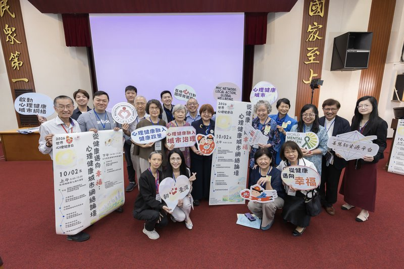
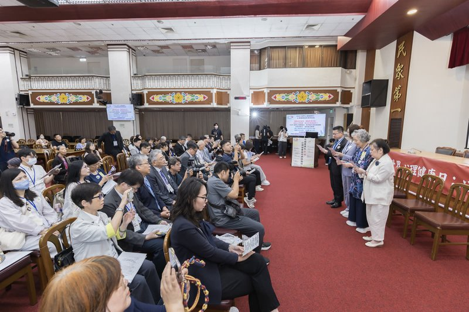

心理健康城市是什麼？為什麼要從下游救援走向上游預防？
整理臺灣心理健康聯盟與國教行動聯盟（民間團體）2026 年 10 月 7 日世界心理健康日聯合新聞稿的重點
心理健康城市，是把心理健康變成城市治理的日常方法：不等到需要治療才開始，而是從生活與環境往上游做起。中華心理衛生協會召集臺灣心理健康聯盟共 77 個民間團體[1]，於 2026 年 10 月 2 日發布「心理健康城市共同宣言」；臺灣心理健康聯盟與國教行動聯盟（民間團體，為聯盟盟友；以下合稱兩盟）再以聯合新聞稿，向縣市長參選人提出三項行動主張[2]。

30 秒重點：這份聯合新聞稿說了什麼？
心理健康城市共同宣言說了什麼？
共同宣言主張「傾聽真實聲音，推動實質改變；沒有心理健康，就沒有健康臺灣！」2026 年 10 月 2 日「心理健康城市網絡論壇：從健康邁向幸福」上，中華心理衛生協會召集臺灣心理健康聯盟共 77 個民間團體發布「心理健康城市共同宣言」[1]。記錄頁載明宣言全文如下（出處為主辦方會後新聞稿第 2 頁）：
「傾聽真實聲音，推動實質改變；沒有心理健康，就沒有健康臺灣！」
2026 世界心理健康日，我們攜手政府與民間、中央與地方，
—— 心理健康城市共同宣言[1]
落實修法精神，將心理健康促進化為在地行動，
傾聽生命經驗、消除社會污名，
從健康邁向幸福，共創社會韌性與全民幸福的心理健康城市！
今年的世界心理健康日在 10 月 10 日，主題是「Lived experiences heard: real voices, real change」（中文意涵：「傾聽過往經歷：真實聲音，實質改變」），由世界心理衛生聯盟（WFMH）公布、世界衛生組織（WHO）共同推廣。[5][6]

兩盟對縣市長參選人提出哪三項行動主張？
三項主張是：全民都要被關照、政策都要問心理健康、真實聲音共同治理。這是國教行動聯盟與臺灣心理健康聯盟對 2026 年縣市長參選人提出的行動主張[2]。
一、全民都要被關照
心理健康促進不是只服務「有問題的人」。地方政府應把促進與普及性預防放在前端，依生命歷程與不同場域，從家庭、社區、學校、職場到高齡生活，於就任 100 日內公布各鄉鎮市區民眾可查詢、可參加的心理健康促進方案[2]；成效不能只看多少人接受治療或諮商，也要看促進與預防是否涵蓋全體民眾。
二、政策都要問心理健康
WHO 2025 年 11 月發布的跨政府部門指引指出，心理健康絕不只是衛生議題，教育、就業、城鄉發展、社會保障、司法、文化、藝術、體育、環境與內政等部門都有責任。[7][2]縣市首長依《精神衛生法》第 17 條是心理健康諮詢會的召集人[3]，兩盟主張應親自主持，並把條文所列「各局處執行心理健康業務之整合、督導及協調」做實。[2]目標是讓每一項重大政策都多問一句：這項決定會讓市民的心理健康更好，還是增加風險與不平等？[2]
三、真實聲音共同治理
今年主題強調，曾面臨心理健康挑戰者的親身經歷本身就是專業知識，他們能指出體制被忽略的盲點；參與不該只是聽「故事分享」，而要從規劃到評估共同參與、從頭引導。兩盟進一步主張，地方政府應建立常態參與機制，每年公開意見與回應，並持續傾聽處於不利處境者的生活經驗。[2]
什麼叫「上游預防」？長河比喻怎麼看？
上游預防，是把政策與預算往前放：改善上游的生活條件與社會環境不平等，並強化中游的制度與服務，而不是把大部分預算放在下游的治療與救援。[2]
臺灣心理健康聯盟召集人張珏在論壇簡報中以一條長河為喻：下游是個人的身心經驗與健康幸福，中游是制度與政策，上游是污名、歧視與貧窮等社會結構；不能只在下游救人，更要往上游消除社會結構的不平等。一切的目標，都指向個人的健康與幸福，以及一座接納、平等、經濟安全且包容的城市。[8][2]
國教盟理事長王瀚陽指出，這代表心理健康不能被縮減成「有症狀才求助、有問題才轉介」。如果地方治理的主要績效只剩諮商人次、轉介量或醫療服務量，就會看不到那些服務體系看不見、卻已受到孤立、歧視、貧窮、照顧壓力、居住不穩、職場壓力或交通不便影響的人，也看不到全民都需要的心理韌性養成。[2]
「心理健康城市，從消除病理到建構幸福的社會；心理健康韌性之培養，從生活實踐開始。」
—— 臺灣心理健康聯盟召集人 張珏[2]
張珏表示，臺灣從 2015 年起就做過「心理健康融入所有政策」的指標與評估[8]，第二年並到教育、職場與防災社區等場域落實；心理健康是基本人權，也是政府各部會與全社會的共同責任，下一步是讓城市把它做成日常的治理方法，從傾聽真實聲音開始。[2]
上游預防是在反對醫療嗎？《精神衛生法》與行政院計畫怎麼支撐？
不是。兩盟的主張是「不是反對醫療，而是把心理健康往前做」，而法律與行政院計畫本來就把「促進」放在前面。[2]
| 依據 | 內容 |
|---|---|
| 《精神衛生法》第 1 條 | 把「促進人民心理健康」放在立法目的之首。[3] |
| 《精神衛生法》第 4 條、第 5 條 | 分別把心理健康促進政策與方案的規劃、訂定、宣導及執行，列為中央與地方主管機關的職掌。[3] |
| 《精神衛生法》第 6 條以下 | 課予教育、勞動、內政、法務、文化等各目的事業主管機關推動心理健康促進的責任。[3] |
| 《精神衛生法施行細則》第 2 條（2026 年 7 月 31 日修正發布） | 明定心理健康促進是由政府及民間投入資源，提升個人、家庭、學校、社區、職場及社會環境保護心理健康的因子，並減少不利心理健康的風險。[9] |
| 行政院「全民心理健康韌性計畫」 | 2025 至 2030 年、6 年 56.3 億元；六大策略的第一項就是「全方位心理健康促進」。[4][2] |
「社區化」是把診間搬到社區嗎？
不是。社區心理健康的價值，不只是把原本的諮商或醫療服務換一個地點提供。兩盟指出，社區心理學界近年提出「社區輔導」概念，是把教育、預防、倡議、資源連結、社會參與、同儕支持與跨專業合作帶入生活場域[10]；也呼應今年主題推動的社區化與人權照護，讓有需要的人能在社區中獲得居住、工作、教育等以人為本的多元支持。[2]
城市則應從居住、就業、交通、文化、公共空間、社會連結與反歧視等面向，減少心理健康的不利條件；並在社區建立身心健康中心、培養健康生活型態，加強個人的心理韌性與社會情緒學習，也加強社區韌性，讓社區的互動與互助成為日常的支持力量。[2]
不同年齡層、不同場域各有心理健康的重點，但都能從心理韌性的培養受益。社會情緒學習（Social and Emotional Learning, SEL）的溝通方式與技巧，可應用於家庭、婚前、婚後、孕期、學齡前、國中小到各級學校與工作場域，也適用於擔任照顧者、主管、志工，身為病友，或面對喪偶、離婚之後等人生階段。[2]
對孩子和學校來說，上游預防意味著什麼？
學校與家庭是上游最貼近孩子的場域，校園的心理健康促進要走在事後轉介之前。國教盟理事長王瀚陽表示，心理健康不能等到孩子、家長、工作者或長者撐不住了才被看見；校園的心理健康促進、師生賦權與家長支持，要走在事後轉介之前，而當孩子真的需要幫助時，學校、社區與醫療之間也要有人接、家長要知道進度。[2]
10 月 14 日的「心理健康城市六項承諾書」是什麼？
這是兩盟預告於 10 月 14 日記者會公布的承諾書，邀請 2026 年 22 縣市長參選人逐項回應與簽署。[2]
王瀚陽表示，兩盟將持續推動世界心理健康日的倡議：10 月 14 日，兩盟將在記者會上公布「心理健康城市六項承諾書」。六項承諾從「全民都被關照」「政策都要問心理健康」「真實聲音共同治理」開始，再延伸到社區支持、可及的服務與危機復原的安全網，確保心理健康城市不被縮限為精神醫療或心理諮商的擴充；對所有參選人採同一規則，不分黨派、不評分、不排名、不推薦，完整條文與回應方式屆時公布。兩盟同時呼籲 22 縣市政府公開回應共同宣言。[2]
本頁內容截至 2026 年 10 月 7 日。承諾書完整條文尚未公布，本頁不另行推測其內容。
民眾與參選人可以做什麼？
參選人可以不分黨派響應心理健康城市並逐項回應承諾書，縣市政府可以公開回應共同宣言，民眾可以先看一分鐘短片、一起聽見真實聲音。[2]
- 縣市長參選人：臺灣心理健康聯盟同日發布一分鐘動畫短片（國教盟協力製作），邀請每一位 2026 年縣市長參選人不分黨派響應心理健康城市；承諾書公布後，邀請逐項回應與簽署。[2]
- 22 縣市政府：公開回應「心理健康城市共同宣言」。[2]
- 一般民眾：觀看一分鐘動畫短片（YouTube），邀請大家一起聽見真實聲音。[2]
心理支持資訊：如本人或身邊親友有心理壓力或情緒困擾，可撥打衛生福利部 1925 安心專線（24 小時免付費）。[2]
兩盟強調，2026 世界心理健康日真正要回答的，不是「政府增加了多少心理服務」，而是「我們有沒有讓更多人不必走到需要被救援的那一步」。[2]
關於心理健康城市，大家常問什麼？
心理健康城市是什麼意思？
兩盟的說法是讓城市把心理健康做成日常的治理方法：從居住、就業、交通、文化、公共空間、社會連結與反歧視等面向，減少心理健康的不利條件。[2]
2026 年世界心理健康日的主題是什麼？
主題是「Lived experiences heard: real voices, real change」，中文意涵為「傾聽過往經歷：真實聲音，實質改變」。[5][6]
兩盟對縣市長參選人提出哪三項主張？
一、全民都要被關照；二、政策都要問心理健康；三、真實聲音共同治理。第一項要求就任 100 日內公布各鄉鎮市區民眾可查詢、可參加的心理健康促進方案。[2]
10 月 14 日會發生什麼事？
兩盟將在記者會上公布「心理健康城市六項承諾書」，邀請 22 縣市長參選人逐項回應與簽署；採同一規則，不分黨派、不評分、不排名、不推薦，完整條文屆時公布。[2]
國教行動聯盟和臺灣心理健康聯盟是什麼關係？
國教行動聯盟（簡稱國教盟，民間團體）是臺灣心理健康聯盟的盟友；這次兩盟共同發布聯合新聞稿，並由國教盟協力製作一分鐘動畫短片。[2]
心理壓力大的時候可以打哪支電話？
可撥打衛生福利部 1925 安心專線，24 小時免付費；如本人或身邊親友有心理壓力或情緒困擾，都可以使用。[2]
資料來源有哪些？
- 國教行動聯盟（2026）。心理健康城市網絡論壇會後記錄。 https://aabe.org.tw/events/2026-10-02-mental-health-city-forum/record/
- 臺灣心理健康聯盟、國教行動聯盟（2026 年 10 月 7 日）。心理健康從生活實踐開始：響應世界心理健康日 兩盟籲心理健康應融入城市治理策略〔聯合新聞稿〕。國教行動聯盟。 https://aabe.org.tw/press/2026-10-07-world-mental-health-day-joint-press-release/
- 全國法規資料庫（2022）。精神衛生法（民國 111 年 12 月 14 日修正公布；第 1 條、第 4 條至第 9 條、第 13 條、第 17 條）。 https://law.moj.gov.tw/LawClass/LawAll.aspx?pcode=L0020030
- 行政院（2024 年 9 月 6 日）。全民心理健康韌性計畫。 https://www.ey.gov.tw/Page/5A8A0CB5B41DA11E/8e8835ef-5b07-4e02-8b19-906b6964a10c
- World Federation for Mental Health. (2026, August 11). World Mental Health Day 2026. https://wfmh.global/news/2026.26-08-11_world-mental-health-day-2026
- World Health Organization. (n.d.). World Mental Health Day 2026: Lived experiences heard: real voices, real change. https://www.who.int/campaigns/world-mental-health-day/2026
- World Health Organization. (2025). Guidance on policy and strategic actions to protect and promote mental health and well-being across government sectors. https://www.who.int/publications/i/item/9789240114388
- 張珏（2026 年 10 月 2 日）。心理健康融入所有政策〔論壇簡報〕。心理健康城市網絡論壇：從健康邁向幸福，臺北。取自國教行動聯盟會後記錄頁所連結之主辦方公開資料夾： https://aabe.org.tw/events/2026-10-02-mental-health-city-forum/record/
- 全國法規資料庫（2026）。精神衛生法施行細則（民國 115 年 7 月 31 日修正發布；第 2 條）。 https://law.moj.gov.tw/LawClass/LawAll.aspx?pcode=L0020033
- 社區心理學實務平台（2026 年 10 月）。《「社區心理學實務」課程發展》專輯（VIII）：從「社區諮商」到「社區輔導」的新服務典範〔概念參考〕。 http://communitywellbeing.blogspot.com/2026/10/viii.html